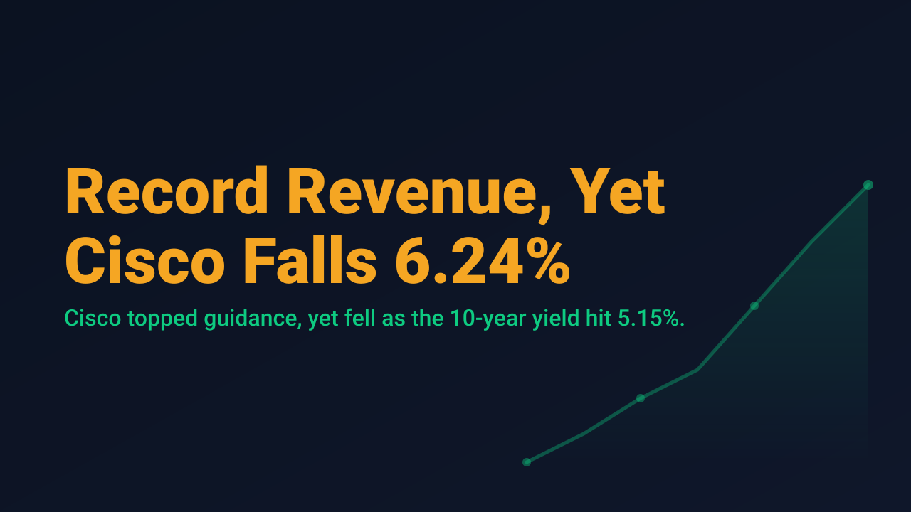
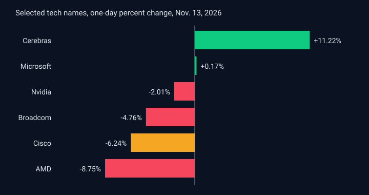

Record Revenue, Yet Cisco Falls 6.24%

Cisco Systems reported record first-quarter revenue of $18.5 billion, up 24% from a year earlier, with earnings of $1.40 per share. Both figures were above the company's own guidance, and management raised its fiscal 2027 revenue outlook. The stock still closed down 6.24% on Friday, November 13. The reaction is a useful reminder that a beat is judged against what the market already expects, not against what the company guided.
The explanation offered by market commentary centered on two details inside the report: order growth excluding hyperscalers slowed to 14%, and gross margin faced pressure. Neither detail cancels a record quarter, but together they gave holders a reason to sell into strength, and the broader tape offered little support. The Nasdaq Composite fell 0.91% to 25,136.27 and the S&P 500 lost 0.40% to 7,561.67, while the Dow Jones Industrial Average edged up 0.10% to 52,347.55.

The chip complex was weaker still. AMD fell 8.75%, Broadcom fell 4.76% and Nvidia fell 2.01%, while Cerebras gained 11.22% after reporting third-quarter revenue growth of 55% and raising its 2026 outlook. Dispersion of that size inside one theme suggests that investors are discriminating on earnings quality and guidance rather than trading the sector as a single block.
The macro backdrop helps explain the discrimination. The October Producer Price Index rose 0.3% on the month, slightly below the 0.4% consensus, but the 12-month rate of 6.5% was the highest since November 2022. The 10-year Treasury yield closed near 5.15%, up roughly 29 basis points on the week, and the 2-year yield rose about 35 basis points, its largest weekly jump since September 2024. Futures markets priced roughly an 88% chance of a 25 basis point Fed hike in December, with a further 12% chance of 50 basis points. When the discount rate is rising this quickly, richly valued growth names have less room for any disappointment.
For swing traders, the lesson from Friday is procedural rather than directional. Headline strength in earnings did not protect a share price when the rate backdrop tightened and the details underneath softened. Reviewing the same set of inputs before each entry, and sizing smaller when they disagree, is a more durable approach than reacting to the headline number.